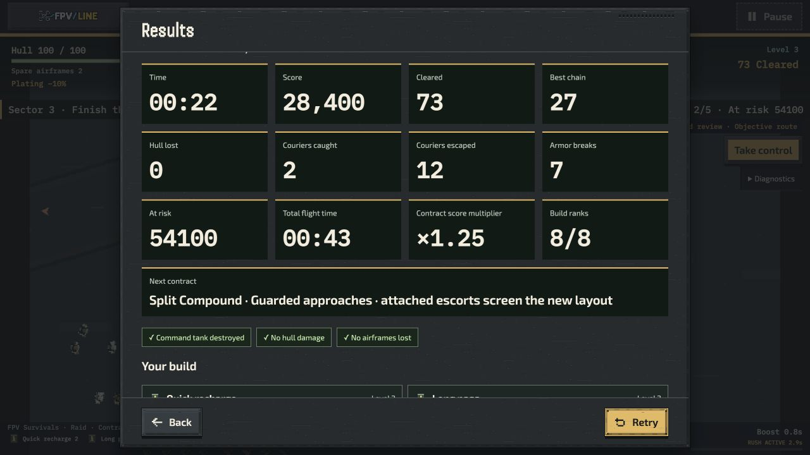
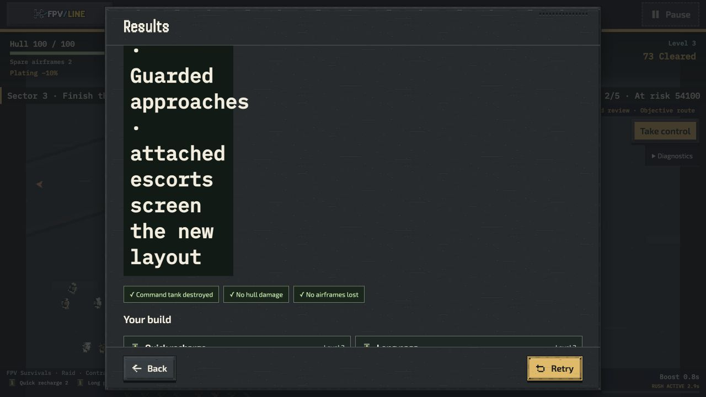

FPV Survivals — delivery review
What changed
Clearer contract decisions
Current Marathon previews describe the actual next layout and route ordering. Older
missions keep their real legacy behavior.
Challenge stays optional
The two Systems builds complete with the default three airframes. Their one-airframe
losses remain recorded; there is no blanket weapon buff.
Existing progress preserved
Earlier missions and records keep their identities. Early upgrades, familiar controls,
shared audio and all five operations remain together.
Plan the next contract
Native results now give the next route a full-width text panel. The two-contract before/after
replays retain identical gameplay summaries.

See the preserved cramped layout before the fix

Systems comparison
| Same map / seed / build |
One-airframe challenge |
Default three airframes |
| Single Drone · Dispatch Junction · Veteran |
Alternate route lost at 4:47 |
Original route won at 6:30 |
| Riy · Shelterbelt Gaps · Standard |
Alternate route lost at 4:32 |
Original route won at 5:58 |
All four runs earned ten upgrades. Each default win lost two airframes. These fixed pilots
demonstrate possible routes; they do not establish ordinary-player difficulty or enjoyment.
Native movement lifecycle
Ten shared-menu retries retained one canvas, the same appearance and project, a stable sprite
pool, and the same 28.47 MB base atlas. Most restart receipts are short entry checks, not full
sorties. The separate fresh fifteen-minute soak passed on the available Mac: p95 11.1 ms, p99
13.4 ms, no dropped simulation time, with every stall retained. This is a 1,500 simulated /
700 visible reference fixture, not a player-balance test.
Refit or keep your build?
Two branches from the same naturally earned eight-rank checkpoint cleared five contracts. The
offered replacement shortened Long Pass and strengthened Disrupt Guard; it earned more score
but took longer and more damage on this fixed route.
| Offered choice |
Time |
Damage |
Banked score |
| Keep build + useful reroll |
100.50 s |
36 |
174,849 |
| Equal-rank refit |
105.38 s |
108 |
186,762 |
One fixed automated campaign, no equipment grants or seed search. Both retain eight ranks and
three airframes. Later earned repairs are logged; these are gameplay clocks, not
ordinary-player completion targets.
Watch and listen
Latest Echo completion and sound
Native 6:44 completion plus dense Reactions, Classic/tank arrival and Reactions/boss clips
with shared synth music.
Open the three sound clips
Full builds and effects
Native Fan, Echo and Systems clips, active/unattended evidence and normal/reduced effects.
Every clip retains its recorded source.
Open gameplay comparisons
All eighteen maps
Explore the six battlefield families and their authored layouts, with native views and
launch links.
Explore maps
Native completed sortie

Review boundaries
Listening quality, warning audibility, visual appeal and enjoyment remain gameplay-review
judgments. Time Attack medals remain provisional. External
laptop/Safari/controller/phone/five-player testing was explicitly skipped. Available-Mac
measurements are not target-device certification. Experimental local spacing remains opt-in.